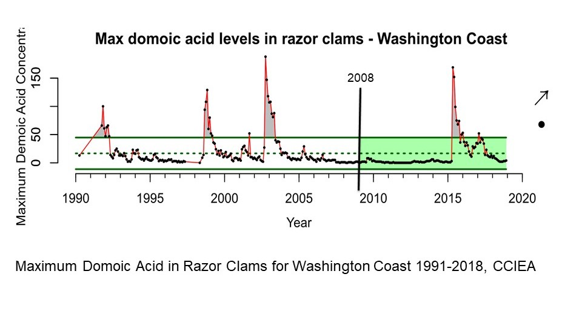

PLEASE NOTE: for real-time information about shellfish harvesting in Washington, please visit the Washington Department of Health shellfish safety information map
Trends - Biotoxin closures
 Shellfish harvest closure days at OCNMS beaches due to risks of Amnesic Shellfish Poisoning (ASP, top panel), Diarrhetic Shellfish Poisoning (DSP, middle panel), and Paralytic Shellfish Poisoning (PSP, bottom panel). Source: A. Coyne/Washington State Department of Health, personal communication, January 15, 2020; Image: A. Mabrouk/NOAA.
Shellfish harvest closure days at OCNMS beaches due to risks of Amnesic Shellfish Poisoning (ASP, top panel), Diarrhetic Shellfish Poisoning (DSP, middle panel), and Paralytic Shellfish Poisoning (PSP, bottom panel). Source: A. Coyne/Washington State Department of Health, personal communication, January 15, 2020; Image: A. Mabrouk/NOAA.
Trends - Domoic Acid, all beaches (CCIEA)
 Maximum domoic acid levels in razor clams for the Washington coast (1991–2019). The vertical black line indicates the year of the last condition report (2008). The black dot ( ●) indicates that the mean for the last 10 years was within 1 standard deviation of the long-term mean. During the last 10 years, the trend increased (indicated by arrow ↗). The long-term mean is indicated by a green dashed line; solid green lines show ±1 standard deviation. Image: IEA, 2020.
Trends - Kalaloch Domoic Acid Levels
 Domoic acid levels in razor clams for Kalaloch Beach, OCNMS (1999–2021). Dashed line shows the WDFW domoic acid threshold (20 ppm). Source: Washington Department of Health; WDFW, 2021; Image: Dan Ayres/WDFW.
Domoic acid levels in razor clams for Kalaloch Beach, OCNMS (1999–2021). Dashed line shows the WDFW domoic acid threshold (20 ppm). Source: Washington Department of Health; WDFW, 2021; Image: Dan Ayres/WDFW.
Trends - Mocrocks Domoic Acid Levels (CCIEA)
Maximum domoic acid levels in razor clams for Mocrocks Beach, OCNMS (1991–2019). The vertical black line indicates the year of the last condition report (2008). The black dot (●) indicates that the mean for the last 10 years was within 1 standard deviation of the long-term mean. During the last 10 years, the trend did not change (indicated by arrow →). Solid green lines show ±1 standard deviation. Image: IEA, 2020.
Trends - Mocrocks Domoic Acid Levels (WDFW)
Domoic acid levels in razor clams for Mocrocks Beach, OCNMS (1999–2021). Dashed line shows the WDFW domoic acid threshold (20 ppm). Source: Washington Department of Health; WDFW, 2021; Image: Dan Ayres/WDFW.